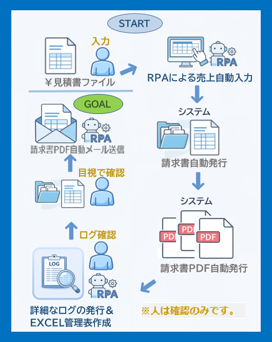

① 見積書 → 売上入力 → 請求書 → PDF → 確認 → 送信
※人の判断が必要な確認工程のみを残し、それ以外は自動処理します。

- Microsoft Power Automate を基盤に、「人の確認工程」を意図的に残して、現場が安心して使い続けられる自動化を実現します。
- 新システム導入についても、関連する業務を自動化します。ご相談ください。
- 重要なのは、見積書入力を起点に「極力入力しない」業務設計を行うことです。
- システムからの見積入力→売上入力に移行で自動化できていない職場にも、RPAで自動化できます。
- 見積書データを起点に、売上入力・請求書発行・PDF化・メール送信までを一連で自動化。途中に 人の確認（OK/NG） を挟み、「速さ」と「安全性」を両立します。
- ※ 自動化の目的は「RPAを使うこと」ではありません。業務が安定して回るなら、システム側の自動処理や移行機能を優先することもあります。AbeLabでは、最適な手段を選ぶことを最優先に設計します。